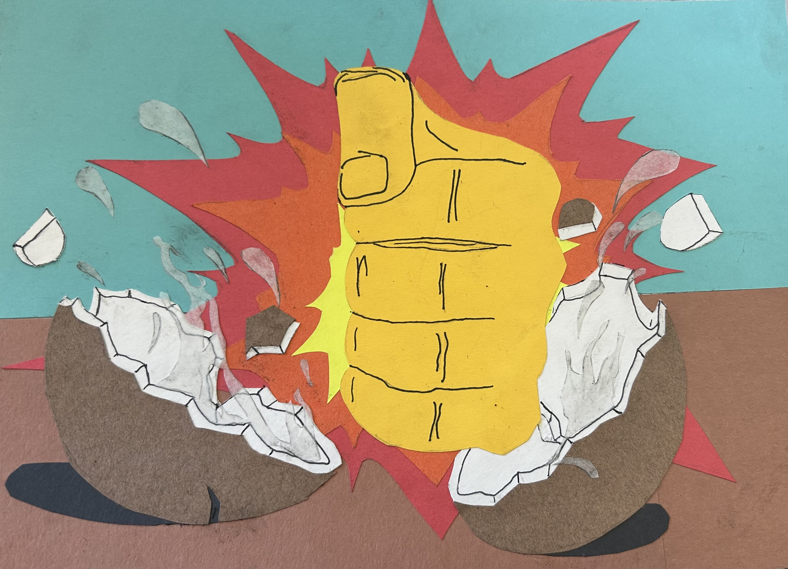
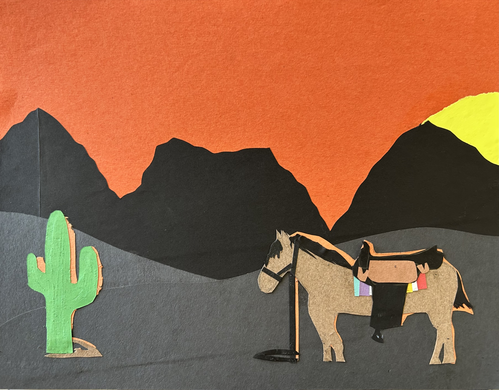

Emotions
The goal of these two projects is to show an emotion using colored paper only and limited pen or marker work.

Anger
(September 25, 2025)
the first piece is portraying anger by having a balled up fist smashing into a coconut with an exaggerated effect being showcased: an impact effect behind the fist and coconut chunks and water popping out of it as it's split in half. the blue background has a purpose of remaining a light color so that the attention is brought on to the action and the brown bottom part is to remain as a surface that the coconut is being smashed into.

Alone
(September 25, 2025)
this piece shows a setting of being alone. entirely, i didn't make it seem like something was alone and afraid of it, but i wanted to show two main objects alone: the cactus (on the left) with no other cactus around it, just the only one there, and then the horse (right) with a saddle on but no one around to ride it. the background is a nice orange and the sun is still peeking out a little, grazing over the two objects over the distant mountains before it goes down for the sunset.